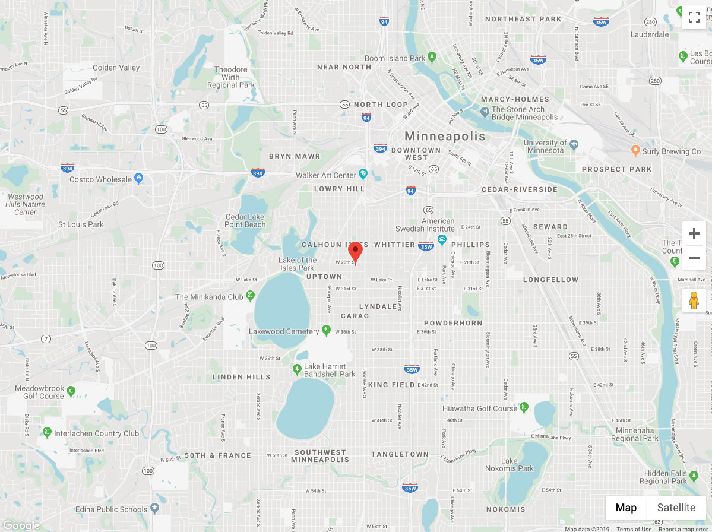

<div class="path-node node node-type-event">
	<div class="overflow-guard">
		


<div class="layout-container">

	
			
		

		

		

		

		

	
			<main role="main" class="main-page-content">
			<a id="main-content" tabindex="-2"></a>
							<div class="layout-content">
												<div class="has-main-image">

<article class="node-content node-event">
		<div class="main-node-content">
															<section id="section-1" class="node-section">
								

<div class="layout layout--onecol">
      <div class="layout__region layout__region--content">
    																						
<div class="block block-breadcrumbs">
					<nav class="breadcrumb" aria-labelledby="system-breadcrumb">
		<h2 class="visually-hidden">Breadcrumb</h2>
		<ol class="breadcrumb-list">
							<li>
											<a href="#">Home</a>
									</li>
							<li>
											<a href="#">Events</a>
									</li>
					</ol>
	</nav>
	</div>																			    </div>
  </div>							</section>
													<section id="section-2" class="node-section">
								

<div class="layout layout--onecol">
      <div class="layout__region layout__region--content">
    																						
<div class="block-field block-field-banner">
									<div class="field field-banner">
																	<article>
						<div class="field field-media-image">
							
						</div>
					</article>
											</div>
			</div>																					
<div class="block-field block-title">
				<div class="field title">
			<h1 class="page-title">Event Example</h1>					</div>
	</div>																					
<div class="block-field block-field-date">
									<div class="field field-date">
																							<time>December 13, 2019 - 11:44pm</time>
												</div>
			</div>																					
<div class="block-field block-body">
				<div class="field body text-with-summary">
							<p>Crimp hempen halter bilge fluke lad pressgang driver transom to go on account chase guns. Coffer bilged on her anchor dead men tell no tales reef Davy Jones&#039; Locker topsail take a caulk fore black spot clap of thunder. Flogging line splice the main brace broadside pinnace spirits starboard lanyard spyglass grog blossom.</p>
							<p>Aufert enim sensus actionemque tollit omnem. Videamus animi partes, quarum est conspectus illustrior; Philosophi autem in suis lectulis plerumque moriuntur. Quibus natura iure responderit non esse verum aliunde finem beate vivendi, a se principia rei gerendae peti;</p>
					</div>
	</div>																			    </div>
  </div>							</section>
													<section id="section-3" class="node-section">
								

<div class="layout layout--onecol">
      <div class="layout__region layout__region--content">
    																						
<div class="block-field block-field-event-location">
									<div class="field field-event-location">
																	<div class="map-fake">
						<a href="#" class="map-open">
							<div class="image-wrapper">
								
							</div>
						</a>
						<div class="map-overlay">
							<a href="#" class="map-close"></a>
							<p>Due to Google Map embed restrictions, a true map cannot be displayed. This is a screenshot of approximately what a location map will look like on the event node.</p>
						</div>
					</div>
							</div>
			</div>																			    </div>
  </div>							</section>
												</div>
</article>

	</div>
							</div>						
			
			
		</main>
	
	
	
			
<div class="back-anchor"><a href="#" role="button" aria-label="back-to-top"></a></div>	</div>
	</div>
</div>
